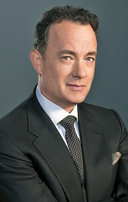
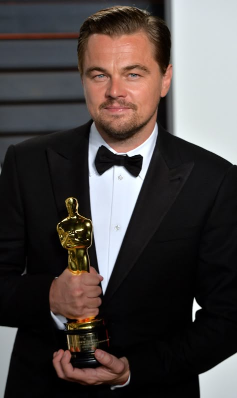
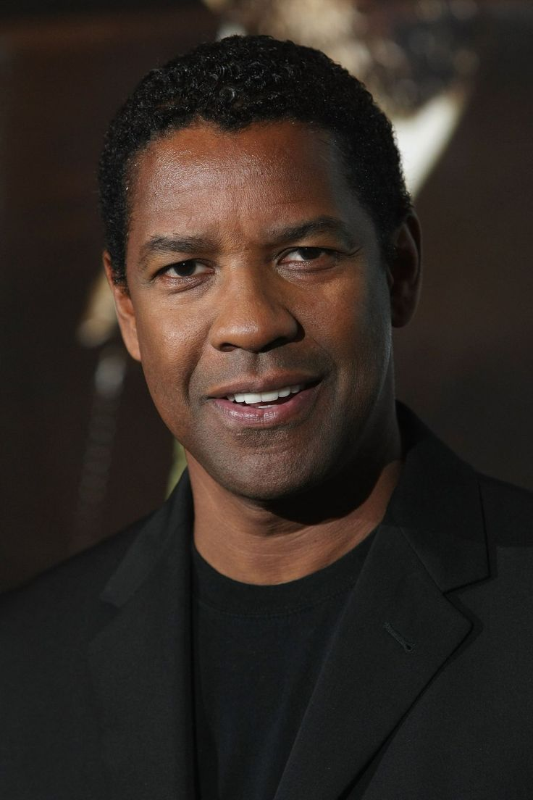

Tom Hanks
Tom Hanks é um dos atores mais respeitados de Hollywood. Conhecido por sua versatilidade, interpretou personagens marcantes em filmes como Forrest Gump, O Resgate do Soldado Ryan, Náufrago e À Espera de um Milagre.Sua carreira é marcada por atuações emocionantes e diversos prêmios.

Leonardo DiCaprio
Leonardo DiCaprio iniciou sua carreira ainda jovem e tornou-se um dos maiores atores da atualidade. Participou de grandes sucessos como Titanic, A Origem, O Lobo de Wall Street e O Regresso , filme pelo qual conquistou seu primeiro Oscar de Melhor Ator.

Maryl Streep
Considerada uma das maiores atrizes de todos os tempos, Meryl Streep é conhecida por sua habilidade em interpretar diferentes personagens. Atuou em filmes como O Diabo Veste Prada, A Dama de Ferro, Mamma Mia! e Kramer vs. Kramer , acumulando um grande número de indicações ao Oscar.

Denzel Washington
Reconhecido por seu talento e carisma. Entre seus filmes mais famosos estão Dia de Treinamento, Um Limite Entre Nós, O Protetor e Malcolm X. Suas atuações lhe renderam diversos prêmios importantes.

Robert Downey Jr
conquistou uma nova geração de fãs ao interpretar Homem de Ferro, personagem fundamental no Universo Cinematográfico Marvel. Além disso, participou de filmes como Sherlock Holmes, Oppenheimer e Chaplin, demonstrando grande versatilidade.

Morgan Freeman
um ator, produtor e narrador norte-americano conhecido por sua voz marcante e por suas atuações memoráveis. Ao longo de sua carreira, participou de filmes de grande sucesso, como Um Sonho de Liberdade, À Espera de um Milagre, Se7en – Os Sete Crimes Capitais, Invictus e a trilogia Batman: O Cavaleiro das Trevas. Em 2005, conquistou o Oscar de Melhor Ator Coadjuvante por sua atuação em Menina de Ouro. Seu talento e sua presença em cena fizeram dele um dos atores mais admirados e respeitados da história do cinema.